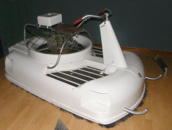
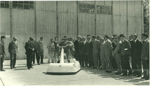
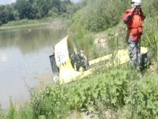
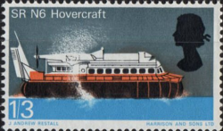
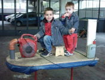
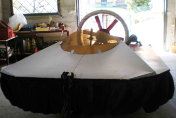
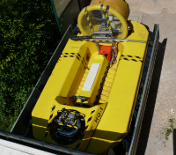

|
Marco Prandi, tra i fondatori fell'Hovercraft Club di Roma, profondo conoscitore del mezzo sotto l'aspetto tecnico e sportivo è mancato nella notte tra i 9 ed il 10 agosto 2019. Marco i cui interessi spaziavano in tutti i campi della tecnica, oltre a partecipare all'attività sportiva, aveva progettato e realizzato alcuni scafi riversando molte delle sue conoscenze in un testo di cui in questo sito (del quale Marco ha curato i contenuti) sono stati pubblicati degli estratti. L'Hovercraft Club di Roma manterrà viva la sua memoria. |
PUBBLICAZIONI DISPONIBILI PRESSO HCR |
Le pubblicazioni possono essere ottenute contattando
direttamente: |
Dal museo Agusta: Moto a cuscino d'aria (hovercraft) |
|
Nel 1954 la Bell realizzò un veicolo monoposto a cuscino d'aria. Il Conte Domenico Agusta presidente della MV Agusta di Cascina Costa (oggi AgustaWestland) nel corso di una visita agli stabilimenti Bell si interessò al mezzo e se fece inviare un esemplare per studiarlo. All'occasione fu preparato un motore sostitutivo di quello americano: si trattava di un bicilindrico orizzontale a due tempi di 56x50 mm =300 cc alimentato da due caruratori Dellorto da 24 mm (tipo VB24 B2). Il motore erogava una potenza di 16 CV a 5200 giri/minuto. L'avviamento era elettrico e la presa di moto verticale azionava una elica in legno a due pale del diametro di 760 mm. parallela al terreno. All'interno della carrozzeria erano collocati alcuni deflettori della correte d'aria per consentire la sterzata e l'avanzamento oltre al sostentamento. I deflettori erano comandati da un manubrio recante anche il comando del gas a manopola, il pilota era completamente scoperto, da cui la denominazione di "moto a cuscino d'aria". La moto fu presentata alla stampa nel 1960 sul piazzale antistante i capannoni aeronautici di Cascina Costa (vedi foto a lato). Un esemplare è oggi conservato nel museo curato dagli ex dipendenti Agusta (vedi foto a colori) il cui sito è raggiungibile all'indirizzo: Altri dettagli, forniti dalla direzione del museo, sono visibili sulla scheda 18 del nostro albo. |
 |
 |
|
Nuovo video AIHC a cura dell'Hovercraft Club Roma |
| L'Hovercraft Club Roma ha pubblicato sul canale
HOVEROMA di YouTube un nuovo filmato relativo all'attività dell AIHC ed
alla descrizione delle varie tipologie di Hovercraft. All'occasione ricordiamo che iscrivendosi al canale HOVEROMA si viene automaticamente informati da YouTube sugli aggiornamenti video. Il canale è raggiungibile dall'indirizzo:
|
STORIA FOTOGRAFICA DELL'HOVERCRAFTSegnaliamo una interessantissima storia fotografica dell'hovercraft dai primordi fino alle realizzazioni industriali.Sul sito sono presenti alcune rare immagini e filmati, in particolare ne segnaliamo uno relativo ad una realizzazione russa del 1937 ed uno relativo all'attraversamento del canale della Manica. Il sito è raggiungibile dal seguente link: |
Terza risalita del Tevere (video)
|
|
| L’Hovercraft Club di Roma dopo aver effettuato
con successo l'esplorazione delle prime due tratte (l’esplorazione
procede dal mare verso la sorgente) ha portato avanti con
successo l’esplorazione del bacino del Tevere nel terzo tratto: circa
35 km di acqua, tra la Oasi faunistica di Nazzano e il ponte stradale
della SS3 Flaminia sul Tevere, a valle di Orte , percorsi in meno di
un’ora. Il punto di incontro è stato il rimessaggio Motonautica Fiume sulla Salaria, che ringraziamo, con appuntamento alle ore 8, mentre l’evento si è ivi concluso verso le ore 17,30.  Gli scafi sono scesi in acqua verso le ore 10,30 esattamente sulla riva destra, al confine verso monte dell’oasi di Nazzano.(Nella foto a fianco: Silvano Moro ripreso alla partenza mentre posiziona la telecamera sul casco). I territori attraversati sono stati quelli dei Comuni di Poggio Mirteto, Stimigliano, Borghetto e Magliano Sabina. A fine percorso a monte (zona Orte), dando il giusto rilievo alla sicurezza, le rapide incontrate in corrispondenza del ponte non sono state affrontate sebbene siano sembrate facilmente affrontabili dai ns piloti. D’altra parte poco più a monte c’è uno sbarramento del fiume quindi sarebbe stato praticamente un rischio inutile. La lunghezza totale del percorso sino ad oggi esplorato e navigato con l’hovercraft sale così a più di 130 km. La navigazione è stata preceduta da opportuni sopralluoghi volti a rilevare punti di riferimento, lunghezza reale del percorso, approdi per gli hovercraft raggiungibili facilmente anche dalle auto, difficoltà e quant’altro ci sia sembrato importante come ad esempio molto importante ci è sembrata la effettiva copertura per i telefoni cellulari. L’organizzazione ha supportato due hovercraft che hanno navigato di conserva eliminando così la necessità di una imbarcazione di supporto; tale componente aggiuntiva rendeva piuttosto onerosa l’avventura sia dal punto economico che da quello tecnico. L’incremento di sicurezza dato dalla presenza di un secondo natante di appoggio comportava un notevole dispendio di carburante, il noleggio dell’imbarcazione, il suo trasporto al rimorchio di un’altra auto, la ricerca di un punto adatto al varo e l’impiego di due persone aggiuntive: tutte cose tutt’altro che trascurabili data la struttura del Club; inoltre la grande differenza di velocità tra i due natanti dilatava a dismisura il tempo necessario alla traversata e offriva un supporto piuttosto tardivo. Gli hovercraft usati si sono dimostrati affidabili. Con contributi delle 5 telecamere è stato montato un filmato che è disponibile per gli appassionati che ne faranno richiesta al HC Roma: una versione ridotta dello stesso è stata pubblicata sul ns canale You Tube. Il canale denominato HOVEROMA è raggiungibile dal link: Il “trust” è risultato composto da: 1. Lorenzo Iussa e Silvano Moro (piloti e owners degli scafi ) 2. Giandomenico Iavazzo, Fabio(ne) Pappagallo, Carlo ing. Pedevillano, Prandi Stefano e Marco, Aldo Vignati (organizzazione). 3. Romano Baglioni, Antonella Bretschneider, Nico Vaiani, ( osservatori ). Il principale materiale necessario all’impresa, messo a disposizione gratuitamente dai singoli aderenti partecipanti, è stato: due hovercraft, due rimorchi, 5 telecamere , due salvagenti e due caschi, un rullo di alaggio, 4 automobili, 5 telefoni cellulari, un navigatore GPS, varie mappe delle zone interessate, 30 litri di benzina, 40 di GPL e poi vino, carbonara, arrosto misto ecc. Appuntamento al prossimo e successivo tratto verso il lago di Corbara. |
|
Hovercraft Club Roma su Youtube |
| L'HOVERCRAFT CLUB ROMA ha attivato un canale su
YOUTUBE
per
la visione dei filmati realizzati dai Ns. aderenti. Il canale è denominato HOVEROMA. Tutti i filmati realizzati sono raggiungibili dal link: http://www.youtube.com/user/HOVEROMA/videos. |
L'hovercraft nei francobolli |
 Varie emisssioni filateliche hanno avuto per tema l'hovercraft.A fianco è raffigurato il francobollo emesso nel 1996 dal regno unito facente parte di una serie di 4 valori dedicata alla tecnologia britannica. Il bozzetto dell'artista J. A. Restall raffigura l'hovercraft SR N6 di cui si possono conoscere maggiori informazioni dalla scheda 4 del Ns. albo degli hovercraft o dal sito WIKIPEDIA. Alcuni interi postali relativi a corrispondenza viaggiata su hovercraft possono essere visionati da questo link. In inghilterra era presente anche un Club dei collezionisti di francobolli relativi agli hovercraft. Ulteriori informazioni sul club attualmente sono ottenibili dal sito di uno dei fondatori. |
NUOVI AMICI |
 Da Bologna ci viene segnalato il lavoro di Daniele da Forlì che già esperto aviatore ultraleggero e modellista si sta cimentando con gli hovercraft .Gli esperimenti vengono portati avanti con mezzi da puro entusiasta e con l'ausilio di due giovani piloti collaudatori legati a lui con forti vincoli di sangue. La segnalazione è piuttosto datata e forse al momento è stato già fatto qualche passo in avanti. Un cordiale saluto al ns. amico unito ad un incoraggiamento a proseguire negli esperimenti: anche Sir Cockerell iniziò con un aspirapolvere ! |
 Adriano Conti ci invia una foto di uno scafo tipo
Mauro
del
Signore, regolarmente funzionante dopo circa 25 anni, rimotorizzato con
il classico Rotax 503. |
 Il Sig. Giovanni Bettega ci ha inviato la foto di
un
hover del
ns. club in buone condizioni, commercializzato da altri con il nome
VIPER. |
L'Hovercraft su WIKIPEDIA |
|
L'enciclopedia libera Wikipedia gestita dalla fondazione
senza fini di lucro WIKIMEDIA
nell'edizione italiana alla voce hovercraft, raggiungibile
all'indirizzo http://it.wikipedia.org/wiki/Hovercraft, cita il
Ns. sito al primo posto come sito di approfondimento in lingua italiana. |
Esclusivo: Disponibile in rete un nuovo capitolo del libro curato dall'Hovercraft Club Roma! |
|
A dieci anni dalla pubblicazione in Italia del testo di Jeremy Kemp che trattava dell'hovercraft integrato (dotato cioè di un solo motore e di una sola ventola) il libro di prossima pubblicazione "I nostri hovercraft" tratta in modo esaustivo i problemi legati alla realizzazione, da parte di un appassionato, di un mezzo più complesso, fornendo, in particolare, molte informazioni relative all'impiego delle ventole. La trattazione teorica è comunque ridotta all'essenziale per non appesantire eccessivamente il testo che è corredato da un ampio apparato iconografico e riporta, in appendice, anche il Regolamento di gara della European Hovercraft Federation Il volume sarà distribuito sotto forma di CD ai soci dell'Hovercraft Club Roma Per gentile concessione dell'autore pubblichiamo il capitolo "Determinazione della velocità massima di un hovercraft" che è raggiungibile dal sottostante link: |